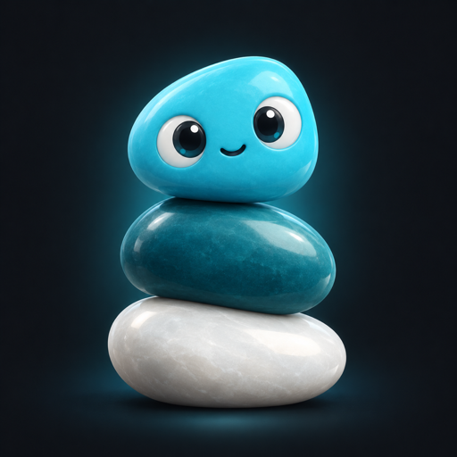

SoloStack
AI로 혼자서 여러 역할을 자동화하는 법을 다루는 한국어 채널입니다.
채널
- YouTube: youtube.com/@Solostack-1
- Instagram: @solostack11
- Threads: @solostack11
이 사이트에 대해
SoloStack 운영자가 자신의 영상을 자신의 계정에 업로드하는 내부 도구(solostack-publisher)를 소개하는 페이지입니다. 외부 사용자에게 서비스를 제공하거나 다른 사람의 데이터를 수집하지 않습니다.